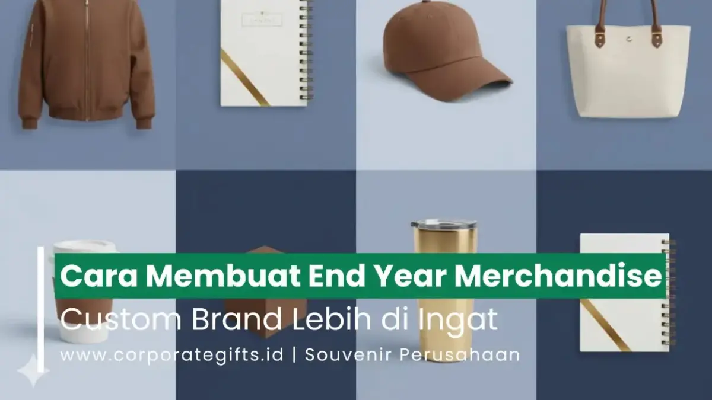

Corporate Gifts ID - End Year Merchandise Custom adalah rangkaian cinderamata dan hadiah promosi akhir tahun yang dirancang khusus dengan penyematan logo, palet warna korporat, serta pesan apresiasi sesuai identitas perusahaan agar senantiasa diingat oleh penerimanya.
Dalam ekosistem bisnis modern, kesan mendalam tercipta bukan hanya melalui mutu produk atau layanan yang ditawarkan, melainkan juga lewat cara perusahaan menjalin interaksi emosional dengan audiensnya. Cinderamata akhir tahun yang dirancang secara terencana terbukti menjadi salah satu instrumen paling efektif untuk menanamkan identitas merek, mempererat kemitraan bisnis (B2B), serta mengapresiasi loyalitas karyawan sepanjang tahun berjalan.
Poin Kunci Pembuatan End Year Merchandise:
- Branding Taktis: Memadukan pesan terima kasih akhir tahun dengan identitas visual merek yang elegan dan berkelas.
- Relevansi Fungsional: Memilih produk bernilai guna tinggi seperti tumbler stainless, tech gear, atau agenda kulit yang dipakai harian.
- Diferensiasi Eksklusif: Membedakan brand dari kompetitor melalui kemasan rigid box custom dan sentuhan personal nama penerima.
- Timeline Tepat: Memulai perencanaan 2 hingga 3 bulan lebih awal demi menjaga kualitas kontrol dan ketepatan distribusi sebelum libur panjang.
Pentingnya Personalisasi dalam Merchandise Perusahaan
Personalisasi kini telah bertransformasi menjadi pilar fundamental dalam strategi komunikasi korporat. Saat sebuah organisasi memberikan cinderamata yang dirancang eksklusif, penerima akan merasakan apresiasi yang tulus secara personal, bukan sekadar merasa dimasukkan ke dalam daftar pengiriman massal tanpa makna.
Berikut tiga alasan utama mengapa personalisasi begitu esensial bagi perusahaan:
- Meningkatkan Brand Recall: Penempatan logo proporsional, kombinasi warna korporat yang harmonis, dan desain fungsional membuat brand terus diingat setiap kali produk digunakan.
- Membangun Koneksi Emosional yang Erat: Hadiah yang dilengkapi ukiran nama personal penerima atau kartu ucapan bertanda tangan manajemen menghadirkan kesan dihargai secara mendalam.
- Menciptakan Diferensiasi Pasar: Merchandise yang dirancang dengan perhatian tinggi terhadap detail material dan kemasan membuktikan standar profesionalisme perusahaan yang unggul dibanding para kompetitor.

Pilihan produk fungsional akhir tahun yang dipadukan dengan teknik grafir laser dan kemasan premium menghadirkan impresi profesional.
Jenis Merchandise yang Bisa Dikustomisasi
Keberhasilan program hadiah akhir tahun sangat dipengaruhi oleh kecermatan Anda dalam memilih kategori produk. Sangat disarankan untuk memprioritaskan barang yang tidak hanya elok dipandang, tetapi juga menyatu dengan rutinitas harian penerimanya:
1. Apparel dan Fashion Korporat
Busana seperti polo shirt berkerah rajut halus, hoodie katun fleece premium, kemeja kerja bordir micro-thread, maupun jaket windbreaker anti-angin. Produk tekstil ini cocok untuk memperkuat rasa kebersamaan internal tim saat acara gathering akhir tahun.
2. Merchandise Kantor Fungsional & Tech Gear
Kategori terfavorit untuk kalangan profesional. Pilihan mencakup tumbler stainless steel vacuum insulated, power bank berkapasitas besar dengan fitur fast charging, wireless charger desktop, flashdisk kartu, serta buku agenda kulit PU dengan kancing magnetik.
3. Produk Ramah Lingkungan (Sustainable & Eco Gift)
Bagi korporasi yang menerapkan prinsip Environmental, Social, and Governance (ESG), produk berbahan serat bambu alami, tas blacu kanvas daur ulang, tumbler kaca borosilikat, dan kalender meja kertas daur ulang menunjukkan kepedulian nyata perusahaan terhadap masa depan bumi.
4. Souvenir Premium dan Exclusive Gift Set Box
Kombinasi bundling beberapa produk berkualitas, seperti paduan buku agenda kulit, pulpen metal grafir nama, dan tumbler LED suhu yang dikemas rapat dalam hardbox berpita satin. Sangat ideal untuk apresiasi klien tier satu, dewan komisaris, dan pemangku kepentingan utama.
Tabel Komparasi Kategori Merchandise Akhir Tahun
| Kategori Produk | Karakteristik & Material | Metode Personalisasi | Target Penerima | Estimasi Budget per Pcs |
|---|---|---|---|---|
| Apparel & Fashion | Katun Combed, Lacoste CVC, Fleece | Bordir Komputer, Sablon DTF High-Res | Karyawan Internal, Komunitas Mitra | Rp 65.000 - Rp 185.000 |
| Tumbler & Drinkware | Stainless Steel SUS 304 Vacuum | Laser Engraving, UV Print Roll 360 | Klien B2B, Seluruh Karyawan | Rp 45.000 - Rp 120.000 |
| Tech Gadget Gear | ABS Fireproof, Baterai Li-Polymer | UV Flatbed Print, Pad Printing | Profesional Muda, Manajerial | Rp 85.000 - Rp 250.000 |
| Eco-Friendly Items | Bambu Alami, Serat Gandum, Kanvas | Grafir Laser Kayu, Sablon Water-Based | Pegiat Lingkungan, Lembaga CSR | Rp 35.000 - Rp 95.000 |
| Executive Gift Set | Kombinasi Rigid Box, Kulit PU, Logam | Deboss Foil Emas, Grafir Nama Personal | Klien VVIP, Direksi, Dewan Komisaris | Rp 150.000 - Rp 450.000 |
Panduan Proses Produksi dan Desain Merchandise Custom
Mewujudkan merchandise akhir tahun berkualitas tinggi menuntut eksekusi terstruktur agar terhindar dari cacat produksi atau keterlambatan pengiriman. Berikut tahapan kerja yang baku:
Tahap 1: Riset Konsep Visual & Penentuan Tema
Awali dengan merumuskan pesan besar yang ingin digaungkan perusahaan di pengujung tahun. Apakah bertema ketangguhan sinergi, perayaan pencapaian target tahunan, atau komitmen inovasi digital berkelanjutan. Selaraskan palet warna produk dengan panduan identitas visual korporat.
Tahap 2: Pemilihan Material & Spesifikasi Produk
Kualitas material adalah penentu utama kepuasan penerima. Prioritaskan bahan bersertifikasi seperti stainless food-grade SUS 304, katun serat alami yang adem, atau kulit sintetis tahan kelupas. Jangan mudah tergiur harga terlampau murah yang sering kali mengorbankan durabilitas produk.
Tahap 3: Pemilihan Metode Cetak Logo Presisi
Pilihlah teknik kustomisasi yang paling serasi dengan tekstur material. Sablon DTF unggul untuk kain bergradasi, cetak UV flatbed sempurna untuk permukaan logam dan plastik datar, deboss blind memberikan impresi mewah pada kulit sintetis, sedangkan grafir laser menghadirkan ukiran abadi yang tak pernah pudar.
Tahap 4: Desain Kemasan Custom (Custom Packaging & Greeting Card)
Kemasan luar adalah pemicu pertama munculnya decak kagum penerima (unboxing experience). Penggunaan rigid box berbalut kertas linen, sleeve bermotif grafis perusahaan, serta kartu ucapan terima kasih yang dibubuhi tanda tangan direksi terbukti menaikkan persepsi nilai produk hingga lebih dari 30 persen.
Tabel Matriks Teknik Branding & Lead Time Produksi
| Teknik Cetak | Kesesuaian Material | Kelebihan Utama | Ketahanan Aus | Estimasi Waktu Pengerjaan |
|---|---|---|---|---|
| Laser Engraving (Grafir) | Stainless, Logam, Kayu, Bambu | Presisi tinggi, mampu cetak nama satuan | Permanen seumur hidup | 3 - 6 Hari Kerja |
| UV Printing (Flatbed/Roll) | Plastik ABS, Akrilik, Stainless, Kaca | Warna cerah, gradasi penuh, tinta cepat kering | Sangat Tinggi (tahan air & gesekan) | 5 - 8 Hari Kerja |
| Deboss / Emboss Kulit | Kulit PU, Kulit Sapi Asli, Hardcover | Tekstur cekung elegan, minim risiko pudar | Permanen seumur pakai | 6 - 9 Hari Kerja |
| Bordir Komputer | Polo Shirt, Jaket Fleece, Topi, Handuk | Timbul eksklusif, benang padat dan rapi | Sangat Tinggi (tahan cuci berulang) | 7 - 12 Hari Kerja |
Tips Memilih Vendor Merchandise Custom Terpercaya
Musim akhir tahun merupakan periode tersibuk di industri souvenir promosi. Memilih mitra vendor yang salah berisiko fatal pada keterlambatan pengiriman atau kecacatan massal produk. Perhatikan empat kriteria evaluasi berikut:
- Portofolio Resmi dan Rekam Jejak Korporat: Pastikan vendor memiliki bukti pengerjaan cinderamata untuk instansi kementerian, BUMN, perbankan, dan perusahaan terkemuka lainnya.
- Layanan Mockup Digital & Sample Approval: Vendor yang bertanggung jawab selalu menyediakan simulasi tata letak logo (digital mockup) serta pembuatan dummy sample fisik sebelum produksi massal dijalankan.
- Kapasitas Mesin & Manajemen Waktu yang Teruji: Fasilitas workshop mandiri dengan mesin produksi lengkap menjamin kepastian tanggal pengiriman sesuai batas waktu yang disepakati.
- Legalitas Usaha & Kepatuhan Pajak Lengkap: Mampu menerbitkan invoice resmi, faktur pajak PPN/PPh, serta surat penawaran harga (RAB/RFQ) yang sesuai regulasi pengadaan perusahaan Anda.
Manfaat Jangka Panjang untuk Reputasi Brand
Pengalokasian anggaran untuk End Year Merchandise Custom sejatinya bukanlah beban biaya konsumtif, melainkan investasi branding yang memberikan imbal hasil terukur (Return on Investment):
- Peningkatan Nilai Retensi Klien B2B: Hadiah akhir tahun yang bernilai guna tinggi memperkokoh relasi kemitraan dan mendorong perpanjangan kontrak kerja sama di tahun mendatang.
- Eksposur Merek Berkelanjutan: Barang fungsional seperti tumbler atau ransel laptop yang dibawa bepergian menjadi media promosi pasif yang mempromosikan nama perusahaan Anda di ruang publik.
- Penguatan Budaya Perusahaan (Employee Advocacy): Apresiasi akhir tahun bagi karyawan menumbuhkan rasa bangga dan keterikatan tinggi, mendorong motivasi kerja yang lebih solid memasuki tahun baru.
Pertanyaan Seputar End Year Merchandise Custom (FAQ)
Kesimpulan dan Rekomendasi Pengadaan
Membuat End Year Merchandise Custom bukan semata perkara membeli produk cinderamata, melainkan tentang membangun pengalaman emosional yang berkesan antara brand perusahaan dengan penerimanya. Melalui kurasi konsep yang matang, seleksi material bermutu tinggi, sentuhan kemasan yang prestisius, serta dukungan vendor yang berintegritas, organisasi Anda dapat mempersembahkan cinderamata penutup tahun yang mengukuhkan posisi kepemimpinan bisnis di hati para mitra.
Mulailah merancang kebutuhan cinderamata perusahaan Anda sedini mungkin agar memiliki keleluasaan waktu dalam proses proofing sampel fisik dan terhindar dari kepadatan antrean produksi menjelang tutup tahun kalender.

Ditulis oleh: Arinda Zakia
Senior Corporate Gifting SpecialistSpesialis strategi merchandise korporat, kurasi souvenir kantor eksekutif, dan solusi branding B2B di CorporateGifts.ID dengan pengalaman menangani ratusan proyek cinderamata instansi dan swasta.
Lihat Profil Lengkap & Panduan Lainnya